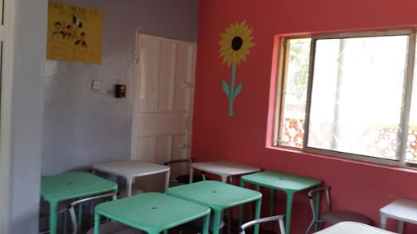
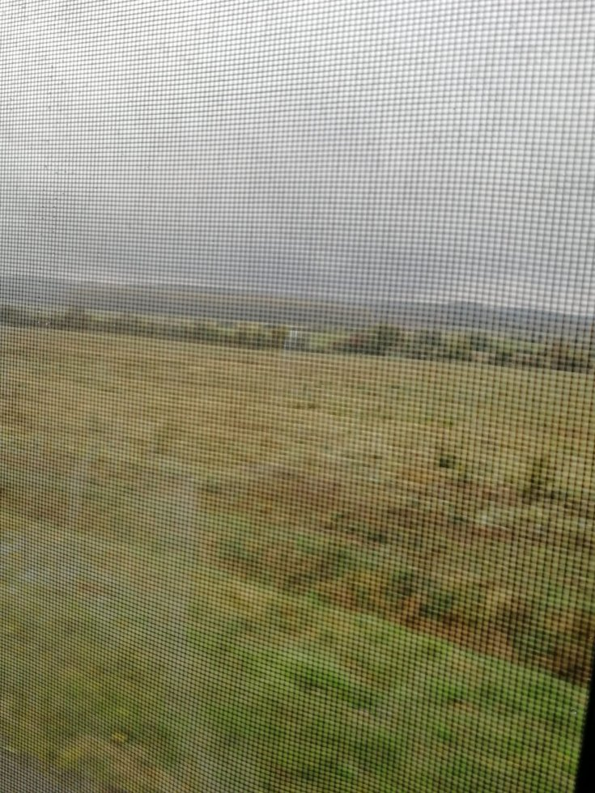
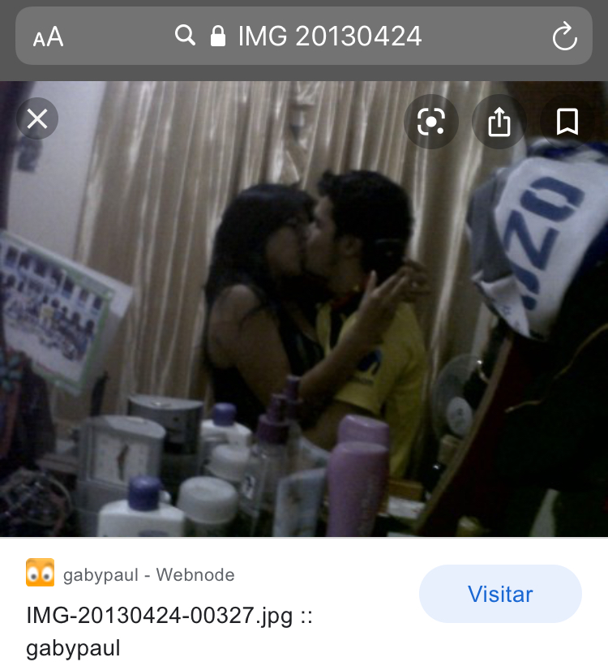
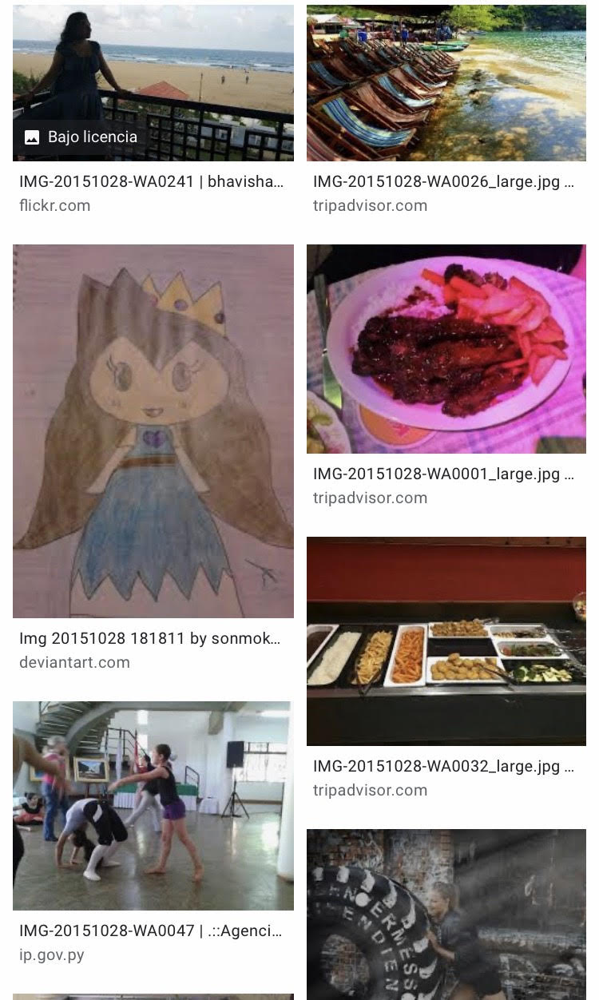
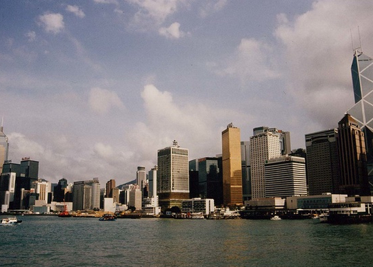
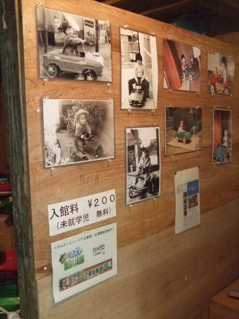
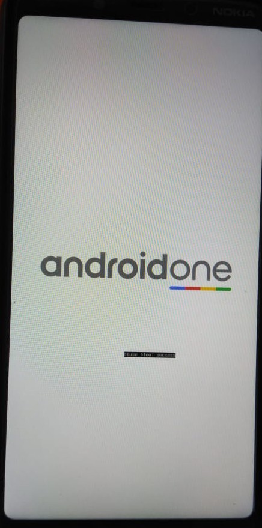
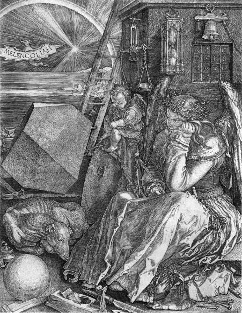
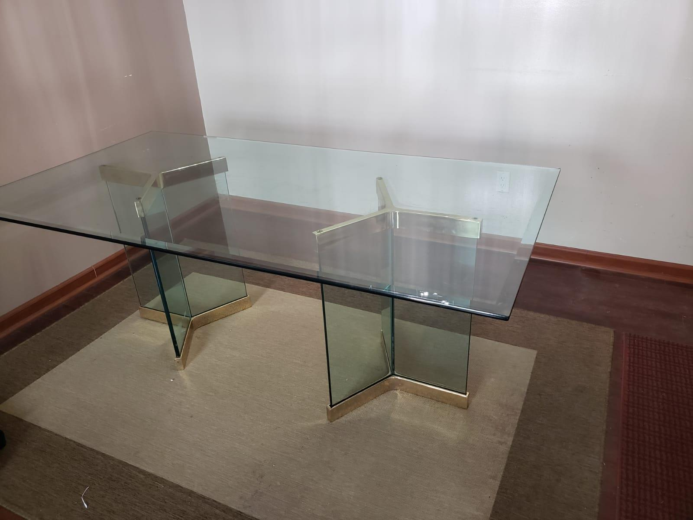

(Sin título)
No hay nada que recalcar, salvo la improvisación que caracterizaba todo lo que acontecía durante aquellos días de nuestras vidas. Si tuviéramos que recrear un reflejo fiel de lo que estábamos experimentando, bastaría con tomarle una fotografía al salón de clases improvisado, cuya existencia en realidad ignoramos casi por siempre. Pero a final de cuentas, ¿qué es la realidad sino un reacomodo continuo de las tarjetas mentales que creamos para entender nuestra vida y etiquetarla bajo rubros que enmarcan fases o épocas pasadas? No obstante, y un tanto en contra a las expectativas que tendríamos el día de hoy, aquella época no se conforma por demasiadas cartas que digamos. Pero si acaso tenemos que enmarcar esa realidad en coordenadas exactas sobre un mapa de tiempo o paisaje idílico, no podría hacerlo con la certidumbre que en cambio caracteriza otros aspectos quizá más relevantes para estos propósitos. Lo importante es que el salón de clases improvisado vivía en el interior de una de esas casas enfiladas sobre el callejón que recorríamos dos o tres veces por semana mientras que yo sufría de una muerte lenta y silenciosa a causa del hambre que solía experimentar durante aquellos días, porque ¿acaso habré estado dando el último estirón? Nos encantaba el juego de improvisar esas mañanas, siguiendo el formato que elegimos desde la primera vez hasta el día en que simplemente ya no pudimos exprimirle más a la época o conjunto cerrado de tarjetas mentales. El recuento de los daños no fue menor, pero por otro lado atesoré el recuerdo de una fecha que, sobre el mapa del tiempo o paisaje idílico, quizá está justo en medio de las dos coordenadas que vagamente acotan esa realidad. Pero vaya improvisación, acabé frente a la imagen del salón de clases improvisado cuya existencia ignoramos por siempre, a excepción del día hoy.

(sin título)
Solo uno de tantos viajes, no es el primero, quizá el último, ¿Quién sabe qué es primero y qué es después?
¿Acaso existe un contador de sucesos?
¿Un cronograma organizado de instantes?
¿Pixeles de toda fotografía?
¿Fotogramas de toda una película?
Neeeeeh, a lo mejor solo son y ya
Solo suceden, sin orden, pero tampoco con simple aleatoriedad.
Incluso lo más ordenado cuenta con dinamismo
Y lo más aleatorio tiene su propio orden

Literalmente mi ex novia y yo :(
Ajsjaja ps vale verga, busqué la fecha de cumpleaños en el 2014 de mi ex novia y ps me salieron dos weyes besándose, me acordé de Larissa y de mí fuk jaja:(
pd. ahora tiene una hija y platicamos a veces ajdjak

Lorraine
Lorraine... EN LA VIDA TRIUNFA EL QUE PERSEVERA, EL QUE SE ESMERA, EL QUE PERSISTE, EL QUE SABE QUE NO ES FÀCIL, PERO CONTINÙA INSISTIENDO, SI SE CANSA DESCANSA Y CONTINÙA. POR ESO ES QUE.,. JAMÀS ME RENDI, JAMÀS ME RINDO.. Y JAMÀS ME RENDIRÈ Responder a Lorraine...

Un abrazo carnal estoy en chinga
Me recuerda el deseo de viajar. Reconocer la prisión geográfica que es la pobreza para millones y millones de seres humanos. Me hizo pensar en cómo cambió internet, donde no se halla ya nada entre tanta mierda y miles de necesitados de atención. Me recordó que el tiempo camina y hay cosas que no tienen sentido. Que en la búsqueda no haya ninguna imagen que tuviera realmente sentido para mi y solo elegí entre lo que me dejaron ver.
Una oraciomética (sólo 500 pesos!)
Instrucciones:
Como los santuarios a Gaucho Gil que solía ver en el norte argentino, para usar la oraciométrica, enciende una vela y empiece a rezar al Gaucho Gil Bello: “Te pido con tu humildad. . .”

La ruta principal
La primera vez que imaginé qué sería manejar de verdad, o la única vez que me estampé con
una barda. Toda la cuestión del movimiento— lo imposible que es, si se mira con calma,
quedarse completamente quieto.
¿Quiénes somos entonces debajo de la fricción o de la tensión con el viento? ¿Cómo logramos
ir más allá de nuestra propia inercia?
La infancia es un recordatorio de cuanto hemos olvidado de nosotros mismos.
¿Quiénes somos entonces debajo de la fricción o de la tensión con el viento? ¿Cómo logramos
ir más allá de nuestra propia inercia?
La infancia es un recordatorio de cuanto hemos olvidado de nosotros mismos.

Lectura de tarot
La carta androidone representa a la gran mente y te señala la importancia de mantener tu sistema nervioso limpio de virus. El proceso de tu acción es lento pero seguro.
XVI LA TORRE
Tésera: Ve y pon un centinela. “Aquí, en dos” (André Du Bouchet). Tomamos prestadas las flechas de nuestros enemigos.
Paramita [upaya kausalya]: “La Iluminación, concebida intelectualmente, no es dinámica, y se detiene al iluminar el sendero que recorrerá el amor. Pero el “Prajñá” es más que meramente intelectual, produce Karuna (amor o compasión), y con su cooperación logra la gran finalidad de la vida: salvar a todos los seres de la Ignorancia, las pasiones y la miseria. Entonces no conoce fin en idear toda clase de medios para llevar adelante sus funciones teleológicas.” (D. T. Suzuki)
Tlacuilo: Unos portan pancartas. Otros portan cabezas.
Parábola: el futuro es desabrido/el pasado una raíz/el presente está crudo/al lenguaje no le gusta cocinar
Leyenda: Yo soy el tenebroso —el viudo—, inconsolado,/Príncipe de Aquitania de la torre abolida;/mi sola estrella ha muerto —mi laúd constelado/sostiene el negro sol de la Melancolía. GERARD DE NERVAL(versión de Octavio Paz)
Figura Koan: Las palabras dichas no estuvieron ni están.

"Melancolía I", Alberto Durero, 1514
(cortesía del autor)

Powderfingers
Me acuerdo cuando iba a la casa de mi amigo Edmon (monsito) y pegaba los dedos en la cara inferior del vidrio cerca del borde de la mesa y mirándola de lado podía ver mis huellas digitales dibujadas en el verde oscuro del vidrio. Si alguien quiere la mesa puede escribir a: kapurnick@yahoo.com para pedir informes, ¡Llame ya!
También me acuerdo de cuando Pedro Pablo, en la clase magistral de Julian Herbert impartida el 4 de octubre del 2020, compartió una anécdota de su familia en Chicago. Cuando se juntan a comer se puede discernir entre los familiares que nacieron allá y los que acaban de llegar de México. En un lado de la cocina se come mac donals y en el otro mole, aunque también hay quien le entra a los dos.